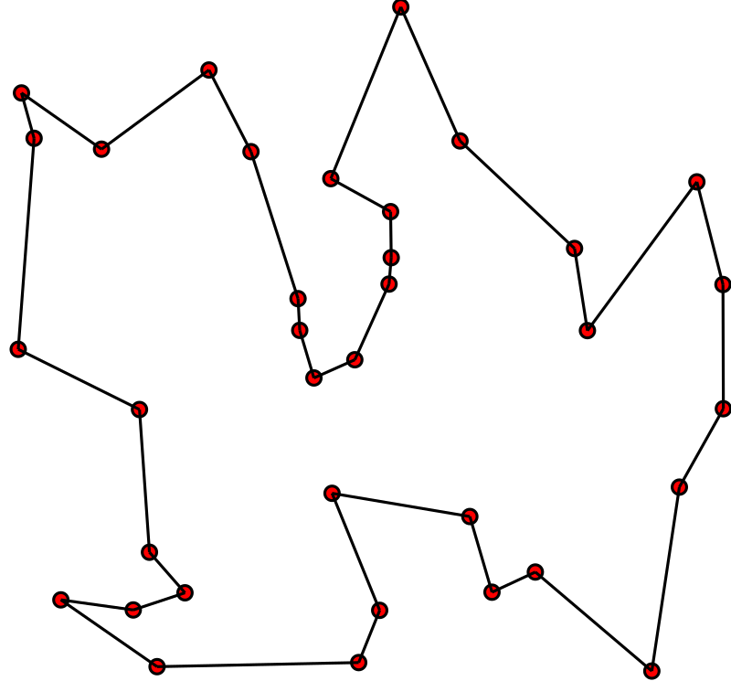

Here you import table with two columns: first one contains addresses while second has unique ID of each point. Goal of this page is to add Longitude and Latitude for each point basing on given address.
TSP - Travelling Salesman Problem
The travelling salesman problem, also known as the travelling salesperson problem (TSP), asks the following question: "Given a list of cities and the distances between each pair of cities, what is the shortest possible route that visits each city exactly once and returns to the origin city?" It is an NP-hard problem in combinatorial optimization, important in theoretical computer science and operations research.

In this page you are able to add your own points with their longitude and latitude attributes (if already known) or upload point received from Geocoding. It is necessary to upload starting point as well.
VRP - Vehicle Routing Problem
The vehicle routing problem (VRP) is a combinatorial optimization and integer programming problem which asks "What is the optimal set of routes for a fleet of vehicles to traverse in order to deliver to a given set of customers?"
In this page you are able to add points with their location attributes, then upload your starting place and vehicle table. Result of the algorithm will show you optimization of routing for all vehicles to complete all orders